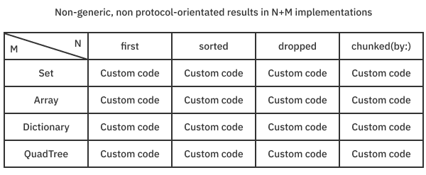
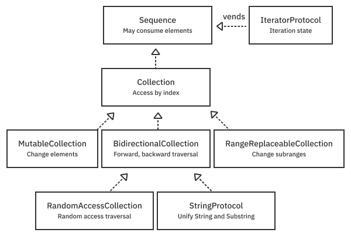

第6章：序列、集合和算法¶
Array、Dictionary和Set站在一个高度可组合的基本协议的层次之上。这些协议包括Sequence和Collection等，抓住了这些类型的本质。Swift标准库的设计是Swift泛型和面向协议编程的案例研究，你可以从中学习和利用。
这些协议所表达的概念足够普遍，以至于它们出现在你可能想不到的地方。例如，你在上一章看到的范围和跨度是序列和集合，就像数组一样。虽然Range类型不需要像Array那样为元素分配内存，但它有许多相同的功能和特性。在这一章中，你将了解到Sequence、Collection和其他相关的协议，看看如何使用它们来编写跨类型家族操作的通用算法。
一系列的协议¶
通过使用协议来定义值的序列、值的集合和其他集合特性的原始概念，你可以编写高性能的通用算法。这让编译器可以处理具体类型用来采用的内存布局的具体细节。
在其他语言中，数据结构及其算法的实现数量会面临所谓的"M乘N问题"。如果没有像泛型和协议这样的语言特性，M个数据结构和N个算法的实现数量就是两者的简单乘积。

想象一下，要维护所有这些代码。上面的图形只显示了四种集合类型和四种算法，总共有16种实现方式。事实上，Swift有大量具体的序列和集合类型，如CollectionOfOne、JoinedSequence、DropWhileSequence等等。
多亏了协议和泛型，实现的数量只有M+N，这意味着你永远不会重复自己。

在这个世界上，任何符合所需协议的类型都能免费获得按需生成的所有算法实现。编译器使用协议声明的协议见证表来实现函数定义。它还可以为特定的具体类型创建特殊化，作为一种优化。虽然了解这些基本的协议类型需要付出程序员的复杂性，但这些知识可以很容易地得到回报，正如你将看到的。
序列和集合¶
为了充分利用这个系统，你需要熟悉与序列和集合有关的协议。下面是这个层次结构的样子：

层次结构包括：
Sequence- 这是层次结构中最原始的类型，可以让你在一个值的列表中迭代。它不保证能够重新访问一个项目。尽管一个符合要求的类型可以是像数组一样的集合，但它也可以是来自网络套接字的数据流，或者是一个永不重复的随机数字序列。采用Sequence的类型可以是不可变的，但必须提供一个符合IteratorProtocol的相关可变类型。IteratorProtocol- 这个幕后协议知道如何获得下一个元素，完成后返回nil。直接使用迭代器类型是可能的，但通常情况下，当你使用for语句时，编译器会为你创建一个。Collection- 所有的集合都是序列，但是Collection增加了一个保证，即你可以使用索引类型重新访问项目。如果你有一个索引，你可以在恒定时间内O(1)查询一个元素。当你实现你的集合时，打破这个保证可能是很诱人的。但是这样做会破坏你所继承的算法的复杂性保证。尽量不要这样做。如果你必须破坏复杂性保证，请在API的文档中明确说明。MutableCollection- 这完善了让你通过索引突变元素的集合。变异都是关于戳破单个元素。重要的是，它并不意味着能够添加和删除元素。BidirectionalCollection- 这是对一个集合的调剂，允许你通过适当地推进索引来向前和向后追踪它。RangeReplaceableCollection- 这些集合让你每次都能修改整个子范围。这种一致性让你删除、插入和追加元素。RandomAccessCollection- 这允许一个集合在恒定时间内以任何顺序遍历元素。它让你在恒定的时间内更新索引和测量索引之间的距离。StringProtocol- 这是一个双向的集合，用于String和Substring。你将在下一章中更详细地探讨String。
这个列表可能会让人觉得很有理论性，所以现在是时候通过一些简单的、具体的例子来进行实践了。
迭代器和序列¶
创建一个自定义类型，当你用for语句在它上面循环时，它将倒数到零。打开本章的Countdown启动游戏，添加以下内容：
struct CountdownIterator: IteratorProtocol {
var count: Int
mutating func next() -> Int? {
guard count >= 0 else { // 1
return nil
}
defer { count -= 1 } // 2
return count
}
}
正如你所看到的，定义一个迭代器很容易。你需要实现一个突变的next()方法，更新状态并返回下一个元素。这段代码
- 只要
count状态大于或等于0，就一直进行下去。否则，它将通过返回nil来终止迭代。 - 在返回当前值之后，减少计数。在返回后改变一个值是
defer语句的一个常见用途。
现在，创建实际的Countdown序列类型，它将CountdownIterator送出：
struct Countdown: Sequence {
let start: Int
func makeIterator() -> CountdownIterator {
CountdownIterator(count: start)
}
}
这个类型所做的就是返回上面的迭代器。现在，通过添加来试试：
for value in Countdown(start: 5) {
print(value)
}
运行playground从5开始倒数到0。在幕后，编译器为Countdown实例化了一个迭代器，并反复调用next()，直到返回nil。幕后的迭代器实例是跟踪循环的状态的。
Note
如果你错过了，这里有大量的类型推理和通用约束在起作用。Sequence类型有相关的类型，用于创建迭代器（Iterator）和返回元素（Element）。一个通用约束保证Sequence.Element与Sequence.Iterator.Element是同一类型。也可以通过从makeIterator()返回some IteratorProtocol而不是一个特定的类型来向客户端隐藏迭代器的实现。
诚然，上面的代码是矫揉造作和学术性的。不过，像这样从头开始构建序列的经验还是很好的，这样你就可以欣赏到Swift标准库中的其他工具了。这个练习还揭示了在序列保持不变的情况下，状态和它的突变是如何保存在迭代器实例中的。
StrideThrough和StrideTo¶
前面的部分可能看起来是很多代码的工作。是的，有一些更简单的方法来完成倒计时任务。例如，你可以使用一个简单的StrideThrough类型，通过调用你在上一章看到的stride函数来创建它。把这个添加到操场上。
print("---")
for value in stride(from: 5, through: 0, by: -1) {
print(value)
}
print("---")
for value in stride(from: 5, to: -1, by: -1) {
print(value)
}
StrideThrough和StrideTo都符合Sequence，分别由stride(from:through:)和stride(from:to:)产生。当你运行这个游戏时，你会看到还有两个从5到0的倒计时。参数through:包括stride中的值, 而参数to:上升到但不包括它.
UnfoldFirstSequence和UnfoldSequence¶
Swift标准库函数sequence(first:next:)和sequence(state:next:)让你无需定义新的序列类型（和迭代器）即可定义自定义序列。试着在你的playground的末尾添加这个：
let countDownFrom5 = sequence(first: 5) { value in
value-1 >= 0 ? value-1 : nil
}
print("---")
for value in countDownFrom5 {
print(value)
}
运行playground，你再次在控制台看到数字从5倒数到0。函数sequence(first:next:)返回类型UnfoldFirstSequence。你需要一个初始值和一个获取当前值并在完成后返回元素或nil的闭包。注意这个序列永远不可能是空的，因为你指定了第一个元素。
接下来，把这个变体添加到playground的末端：
let countDownFrom5State = sequence(state: 5) { (state: inout Int) -> Int? in
defer { state -= 1 }
return state >= 0 ? state : nil
}
print("---")
for value in countDownFrom5State {
print(value)
}
运行playground，再次从5倒数到0。这个sequence()函数的重载需要一个初始状态和一个闭包，让你用一个inout变量来改变这个状态。从闭包返回的值是序列的Optional<Element>类型。这个序列由UnfoldSequence表示，比第一个重载更灵活，因为它对返回的状态和元素进行独立处理。
Note
unfold这个名字是一个函数式编程术语，与fold相反。Swift使用了一个常见的替代术语reduce，而不是fold。你甚至可以说，标准库的作者应该使用Unreduced这样的名字，而不是UnfoldSequence。在实践中，你不需要担心这些类型的名称，因为它们很少被明确地声明，而且经常隐藏在类型清除的后面。你将在第10章"高阶函数"中了解更多关于reduce和朋友的信息。
用AnySequence进行类型清除¶
为了控制复杂性，你经常想对用户（和你自己）隐藏一个序列的类型细节。最理想的做法是从你的函数中返回一个不透明的返回类型，例如some Sequence。然而，不透明的返回类型目前不能让你约束相关的类型，如Element，所以不幸的是，这并不可行。但还是有办法的。用类型清除AnySequence来隐藏这些不重要的类型细节，并保持你的接口干净。
把这个方便的AnySequence的辅助方法添加到你的playground：
extension Sequence {
func eraseToAnySequence() -> AnySequence<Element> {
AnySequence(self)
}
}
这段代码为Sequence添加了一个扩展，将具体序列擦除到AnySequence。这与Combine框架类型擦除发布者时的精神是一样的，你可能以前见过。
使用扩展帮助器的方法是添加：
let seq = countDownFrom5State.eraseToAnySequence()
print("---")
for value in seq {
print(value)
}
print(type(of: countDownFrom5State))
print(type(of: seq))
运行它可以看到seq的类型是AnySequence<Int>，而不是底层的countDownFrom5State，一个UnfoldSequence<Int, Int>。对方法参数进行类型清除并返回AnySequence是很有帮助的，这样你就不会被锁定在一种特定的序列中。
虽然它隐藏了实现的复杂性，但这种额外的间接性有一个小小的惩罚。例如，如果你用AnySequence（或AnyCollection）包装一个Array，你就不能再访问数组的连续存储缓冲区了。出现这种缺乏访问的情况是因为，同样，协议一般不对采用它们的具体类型的内存布局进行假设。
用AnySequence和AnyIterator实现Sequence¶
在上面的例子中，你定义了一个序列，然后对其进行了类型删除，但是AnySequence也给了你一个初始化器，可以一次性完成这两项工作。添加这个：
let anotherCountdown5 = AnySequence<Int> { () -> AnyIterator<Int> in
var count = 5
return AnyIterator<Int> {
defer { count -= 1}
return count >= 0 ? count : nil
}
}
print("---")
for value in anotherCountdown5 {
print(value)
}
当你运行这个playground时，你会看到另一个从5开始的倒计时。这个AnySequence需要一个闭合，使一个迭代器。你可以显式地做这个类型，或者使用AnyIterator，它的类型是擦除迭代器。这个版本的初始化器允许你内联定义next()方法。
上面的例子展示了Swift标准库让你创建一个序列的多种方式。在下一节中，你将从5开始倒数。不过，首先要做几个练习，看看你是否已经掌握了这些概念。
练习¶
练习的答案，一如既往，在最后的下载材料中。为了获得最佳效果，不要偷看--先自己试试。
- 把数组
["a", "tale", "of", "two", "cities"]变成一个类型消除的序列。 - 在
Sequence上写一个扩展，叫做countingDown()，返回一个剩余计数和元素的图元数组。例如，问题一中的数组返回：[(4, "cities"), (3, "two"), (2, "of"), (1, "tale"), (0, "a)]。
Tips
现有的序列算法enumerated()和reversed()可以帮助你用最少的代码完成这项工作。
- 创建一个函数
primes(to value: Int) -> AnySequence<Int>，创建一个素数序列，直到并可能包括value。蛮力寻找素数是可以的。例如，primes(through: 32)将返回[2, 3, 5, 7, 11, 13, 17, 19, 23, 29, 31]。
集合¶
集合建立在序列的基础上，并具有一个额外的保证，即你可以重新访问元素。要访问一个元素，你所需要的只是一个索引，它可以在恒定的时间内访问一个元素O(1)。这种复杂性的保证是很重要的，因为许多其他的算法都依赖于这种基本的性能水平来保证它们自己的性能。
一个FizzBuzz集合¶
像序列一样，学习集合的一个很好的方法是自己创建一个简单的集合。看看Collection的所有协议要求，创建一个集合似乎是一项艰巨的任务。然而，由于大部分API都有很好的默认协议实现，所以它是非常直接的。在某些方面，创建一个集合比从头开始创建一个序列更容易。更重要的是，因为Collection是-一个Sequence，你可以免费获得所有的序列功能。你将使用FizzBuzz来看看这个动作。
FizzBuzz是一个经典的练习，你可以打印出从1到100的数字。但是，如果数字能被3均匀整除，你就打印Fizz，如果数字能被5均匀整除，你就打印Buzz。如果这个数字既能被3又能被5整除，你就打印FizzBuzz。转折点是，你将创建一个自定义的数字、fizzes、buzzes和fizzbuzzes的集合类型，而不仅仅是打印数字。
首先，打开FizzBuzz的启动playground，并添加：
struct FizzBuzz: Collection {
typealias Index = Int
var startIndex: Index { 1 }
var endIndex: Index { 101 }
func index(after i: Index) -> Index { i + 1 }
// .... subscript with index ....
}
这段代码定义了FizzBuzz集合。你首先决定Index的相关类型，并定义开始和结束索引。这里没有必要用typealias来定义Index，但这样做可以使代码更清晰。endIndex被定义为超过有效范围的1。函数index(after:)定义了如何推进你的索引。在这种情况下，实现是微不足道的，只是增加一个。
接下来，用一个有效的下标操作符替换注释：
subscript (index: Index) -> String {
precondition(indices.contains(index), "out of 1-100")
switch (index.isMultiple(of: 3), index.isMultiple(of: 5)) {
case (false, false):
return String(index)
case (true, false):
return "Fizz"
case (false, true):
return "Buzz"
case (true, true):
return "FizzBuzz"
}
}
这段代码使用Swift模式匹配来实现实际的FizzBuzz逻辑。switch元组表达式为一个给定的索引生成适当的元素。
就这样了。默认的协议实现完成了制作一个完整的集合类型的其余工作。你可以用以下方法测试你的新集合：
let fizzBuzz = FizzBuzz()
for value in fizzBuzz {
print(value, terminator: " ")
}
print()
运行playground，看它如何运行。同样，在引擎盖下，编译器正在创建一个FizzBuzz迭代器，并重复调用next()直到循环结束。但还有更多。你可以使用Swift提供的所有集合算法。例如，你可以使用enumerated()和reduce(into:)来打印所有FizzBuzz出现的位置，只要把这个添加到你的操场：
let fizzBuzzPositions =
fizzBuzz.enumerated().reduce(into: []) { list, item in
if item.element == "FizzBuzz" {
list.append(item.offset + fizzBuzz.startIndex)
}
}
print(fizzBuzzPositions)
运行playground，输出[15, 30, 45, 60, 75, 90]。enumerated()方法产生一个偏移量和元素的元组。你需要确保把startIndex加到偏移量上，以得到一个有效的位置。
BidirectionalCollection¶
因为你只实现了Collection的一致性，所以标准库的算法只知道如何在你的集合中向前走。要看到这一点，请给你之前实现的index(after:)添加一些调试打印：
func index(after i: Index) -> Index {
print("Calling \(#function) with \(i)")
return i + 1
}
注释掉你之前的测试代码，添加以下内容：
print(fizzBuzz.dropLast(40).count)
正如你所预料的，这将删除最后的40个元素，并打印出数字60，即剩余的元素数。你可能对after(index:)被调用220次感到惊讶。前100次调用是为了从头开始寻找集合中的最后一个元素。随后的60次调用是为了找到要放弃的范围的第一个索引。最后的60次调用是为了计算剩余的60个元素。
你可以通过使FizzBuzz成为一个BidirectionalCollection来减少调用的次数--一个可以向前和向后遍历的集合。把这个添加到playground：
extension FizzBuzz: BidirectionalCollection {
func index(before i: Index) -> Index {
print("Calling \(#function) with \(i)")
return i - 1
}
}
这段代码让你用琐碎的实现方式i - 1去到当前索引之前的一个索引。
当你运行这个游戏时，你得到的答案和之前一样：60。但是你会发现index(before:)只被调用了40次，因为它向后扫描以找到第一个要丢的项目。然后index(after:)被调用60次来计算剩余的元素。该算法适应于利用双向遍历的能力。
RandomAccessCollection¶
你可以通过使FizzBuzz成为一个随机访问集合来消除所有额外的遍历调用。把它添加到你的playground：
extension FizzBuzz: RandomAccessCollection {
}
现在，当你运行print(fizzBuzz.dropLast(40).count)时，函数index(before:)和index(after:)根本没有被调用。一般来说，当你把一个集合变成RandomAccessCollection时，你需要实现一个index(_:offsetBy:)的函数。然而，在这种情况下，因为你选择了一个Int作为你的索引类型，而且整数是Strideable和Comparable，你可以免费得到这个实现。事实上，有了RandomAccessCollection的一致性和一个可串联的索引，库做了所有的工作，你可以删除你对index(before:)和index(after:)的实现。没有它们，一切都能正常工作。
接下来，是时候用一个更强大的例子来探索如何使集合变得可修改。
MutableCollection¶
因为FizzBuzz在定义上不是可变的，所以用另一个例子来改变齿轮。可变集合允许你用下标设置器来改变元素。MutableCollection意味着项目可以被交换和重新排序。这个操作并不意味着集合大小的改变。
这个例子不仅具有可变性，还具有自定义的、非整数的索引类型。你将使用一个自定义的集合实现康威人生，一个二维的细胞自动机模拟。
《康威人生》的规则¶
作为一个所谓的"零玩家"游戏，《康威人生》的规则很简单。
Starvation：任何少于两个邻居的细胞都会死亡。Equilibrium：任何有两个或三个邻居的细胞都能生存。Overpopulation：任何有三个以上邻居的细胞都会死亡。Birth：任何有三个邻居的空细胞都会出生。
一旦应用程序完成，它将看起来像这样：

你可以画出细胞，然后开始和停止模拟，观察细胞的演变，直到它们达到一个稳定点，模拟自动停止。
打开启动项目，ConwaysLife，花点时间熟悉一下这些文件。
下面是一个快速的概述，以帮助你熟悉。
AppMain.swift：这是标准的应用程序定义和@main入口点。ContentView.swift：它创建并拥有simulation模型类型。它提出了一个LifeView，显示并让你与模型互动。Bitmap.swift：你可能记得这个类型来自Mandelbrot项目。它表示一个二维的像素集合。这个版本通过从Pixel占位符类型中移除PixelProtocol的要求，使其更加通用，让你可以将其用作任何东西的二维网格。你仍然拥有PixelProtocol的力量，并且能够使用这个文件中定义的条件一致性来生成CGImage。Bitmap+Collection.swift：在这里你将为位图定义可变的、随机访问的集合一致性。LifeSimulation.swift。这是你定义游戏商业逻辑的地方。LifeView.swift。这是你的用户界面的SwiftUI定义，它使用你的LifeSimulation模型。RingMemory.swift。这是一个实用类，可以记住最后的n项。这个存储器可以识别以前的细胞模式，并在看到一个细胞时自动停止模拟。
使Bitmap成为一个集合¶
打开文件Bitmap+Collection.swift，添加以下内容：
extension Bitmap: RandomAccessCollection, MutableCollection {
@usableFromInline
struct Index: Comparable {
@inlinable static func < (lhs: Index, rhs: Index) -> Bool {
(lhs.row, lhs.column) < (rhs.row, lhs.column)
}
var row, column: Int
}
// More to come...
}
你让Bitmap采用RandomAccessCollection和MutableCollection。首先，你需要一个Index类型。与之前的FizzBuzz例子不同，这个类型不是一个单一的Int，而是两个整数，用来记录行和列。
你需要定义你的Bitmap索引Comparable是什么意思。一个合理的选择是使遍历以光栅扫描的顺序进行。使用元组比较实现了一个多值比较。光栅扫描是row-major，意味着行是最重要的值。只有当左边的行（lhs）和右边的行（rhs）相等时，column才会打破平局，以确定哪个更大。
这种类型被标记为@usableFromInline，方法被标记为@inlinable，以提示编译器你希望这些方法快速，但可能要付出一些额外的代码大小。你会看到@inlinable在下面的方法中重复出现。
接下来，在"More to come…"下面添加这段代码：
@inlinable var startIndex: Index {
Index(row: 0, column: 0)
}
@inlinable var endIndex: Index {
Index(row: height, column: 0)
}
@inlinable func index(after i: Index) -> Index {
i.column < width-1 ?
Index(row: i.row, column: i.column+1) :
Index(row: i.row+1, column: 0)
}
// More to come...
除去你稍后要定义的下标操作符，这段代码提供了Collection类型的基本定义。值得注意的是index(after:)的定义。为了知道何时跳到下一行，你需要知道集合的width。需要知道索引以外的信息是为什么推进索引是集合的责任，而不是索引本身。(你可以想象一个更复杂的数据结构，如树，需要知道集合的内部细节来推进。)
Note
索引属于一个特定的集合。然而，如果你复制你的集合，任何索引都必须在原始和的副本中工作。突变的操作，例如改变集合的大小，可能会使索引失效。你应该记录这些操作。赋予索引以价值语义使它们更容易推理。
接下来，继续添加这段代码：
@inlinable func index(before i: Index) -> Index {
i.column > 0 ?
Index(row: i.row, column: i.column-1) :
Index(row: i.row-1, column: width-1)
}
// More to come...
这就满足了BidirectionalCollection的索引要求。接下来，添加：
@inlinable
func index(_ i: Index, offsetBy distance: Int) -> Index {
Index(row: i.row + distance / width,
column: i.column + distance % width)
}
@inlinable
func distance(from start: Index, to end: Index) -> Int {
(end.row * width + end.column)
- (start.row * width + start.column)
}
// More to come...
这些满足了RandomAccessCollection的索引要求。因为你的索引是按光栅扫描顺序移动的，除法和模数运算决定了如何进行任意距离的跳跃。
接下来，添加：
@inlinable
func index(of i: Index, rowOffset: Int, columnOffset: Int) -> Index {
Index(row: i.row + rowOffset, column: i.column + columnOffset)
}
// More to come...
这种索引方法并不是采集协议的一部分。它只是一个方便的方法，你可以用来查看相邻的像素。
最后，添加：
@inlinable func contains(index: Index) -> Bool {
(0..<width).contains(index.column) &&
(0..<height).contains(index.row)
}
@inlinable subscript(position: Index) -> Pixel {
get {
precondition(contains(index: position),
"out of bounds index \(position)")
return pixels[position.row * width + position.column]
}
set {
precondition(contains(index: position),
"out of bounds index \(position)")
pixels[position.row * width + position.column] = newValue
}
}
定义contains(index:)并不是必须的，但它是这种类型的一个很好的工具和安全措施。
创建模拟¶
使用Bitmap集合实现模拟。打开LifeSimulation.swift。模型对象有三个公布的属性--isRunning、generation和cells--每次改变都会重绘用户界面。在LifeSimulation的初始化器的末尾添加这条语句：
Timer.publish(every: 0.1, on: .main, in: .common)
.autoconnect()
.sink { [weak self] _ in
self?.evolve()
}
.store(in: &subscriptions)
这段代码为一个Combine定时器发布器创建了一个订阅，并将其存储在subscriptions中。每隔十分之一秒，发布器就会调用evolve()。
在实现evolve()之前，创建一个辅助方法，计算一个给定单元周围的邻居数量。在LifeSimulation中添加以下内容：
func neighborCount(around index: Bitmap<Bool>.Index) -> Int {
var count = 0
for rowOffset in -1...1 {
for columnOffset in -1...1 {
guard rowOffset != 0 || columnOffset != 0 else {
continue
}
let probe = cells.index(of: index, rowOffset: rowOffset,
columnOffset: columnOffset)
count += cells.contains(index: probe) ?
(cells[probe] ? 1 : 0) : 0
}
}
return count
}
这个函数使用了一种命令式的风格。它使用索引创建方法和你之前定义的contains辅助方法。如果一个索引位置超出了Bitmap集合的边界，它将被算作零。(这个选择有点随意，你可以让它环绕。)
接下来，实现evolve()方法。它应该看起来像这样：
func evolve() {
guard isRunning else {
return
}
generation += 1
let neighbors = cells.indices.map(neighborCount(around:))
// The core rules of Life.
zip(cells.indices, neighbors).forEach { index, count in
switch (cells[index], count) {
case (true, 0...1):
cells[index] = false // death by starvation
case (true, 2...3):
cells[index] = true // live on
case (true, 4...):
cells[index] = false // death by overcrowding
case (false, 3):
cells[index] = true // birth
default:
break // no change
}
}
// automatically stop the simulation if stability is reached
if previous.contains(cells) {
isRunning = false
}
previous.add(cells)
}
如果模拟没有运行，guard立即退出。如果是的话，generation会递增并找到所有单元格位置的邻居计数。cells.indices.map(neigherCount(round:))产生一个所有单元格位置的序列并将其映射为neighborCount(round:)。接下来，游戏的核心规则被应用。zip算法创建了一个带有邻居计数的索引图元序列，switch语句根据生命规则对该集合进行变异。最后，previous用于检查模式是否是重复的，如果是，则停止模拟。
接下来，实现cellImage属性获取器，创建一个图像。它应该看起来像这样：
var cellImage: UIImage {
let pixels = cells.map { $0 ? Self.live : Self.none }
guard let image = Bitmap(pixels: pixels, width: cells.width)
.cgImage else {
fatalError("could not create a core graphics image")
}
return UIImage(cgImage: image)
}
这段代码将一个布尔运算的位图映射成一个它可以显示的彩色像素的位图。因为你保证了一个有效的像素类型，创建位图不会失败，如果失败了，你可以直接fatalError。
最后，实现让你在棋盘上绘制单元格的方法。用下面的方法代替setLive(row:column:)：
func setLive(row: Int, column: Int) {
let position = Bitmap<Bool>.Index(row: row, column: column)
if cells.contains(index: position) {
cells[position] = true
previous.reset() // reset automatic stop detection
}
}
这里的代码很直截了当。获取位置并将其设置为真。你不想寻找以前的单元格图案，这样会停止模拟，所以这是一个很好的地方，可以重置看到的历史图案。
建立并运行。在灰色矩形中画一些单元，看看它们是如何模拟的。

Note
康威的人生游戏是图灵完整的。这意味着，你在Swift（或任何其他图灵完全语言）中可以进行的任何计算，都可以通过在Life中的足够大的网格上绘制单元格并进行模拟。如果你有兴趣了解更多关于《生命》及其神奇的创造者约翰-康威的信息，请看这个视频。https://www.youtube.com/watch?v=Kk2MH9O4pXY，并准备好让你的头脑大开。
RangeReplaceableCollection及其他¶
范围可替换集合允许你从一个集合中添加和删除值。主要的例子包括Swift Array和String，但在幕后还有许多其他的例子，包括Data、ContiguousArray和Substring，仅举几例。与其他序列精简协议一样，你实现了一组最小的协议要求，并因此得到了大量的算法。对于RangeReplaceableCollection，你实现一个空的初始化器和replaceSubrange(_:with:)方法。有了这个，你可以得到合理的默认实现，用于所有各种类型的insert、append和remove方法。
Note
为什么不在Life中为你的Bitmap类型实现RangeReplaceableCollection一致性？如果你稍微想一想，你会发现这并没有什么意义。例如，如果你删除一个像素，会发生什么？它应该删除一整列的像素吗？一整行？最好的办法是创建一个新的抽象概念，如GridCollection，明确处理行和列的操作，并从这些操作中形成通用算法。
子集和片断¶
想要处理一个序列或集合的一个子集是很常见的事情。Collection协议以这种方式定义了一个默认的关联类型：
associatedtype SubSequence: Collection = Slice<Self> where // 1
Self.Element == Self.SubSequence.Element, // 2
Self.SubSequence == Self.SubSequence.SubSequence // 3
考虑一下每一行：
- 一个集合的子序列类型本身就是一个默认为标准库类型
Slice的集合。 - 子序列的元素与集合相同。
- 子序列（一个集合），反过来，有一个与原始子序列相同的子序列。这个定义是递归的，所以一路下来的子序列都是相同的集合类型。
要看这个动作，回到你的FizzBuzz游戏场，注释掉调试的打印语句，这样控制台就不会太吵。
然后，在最后添加以下内容：
let slice = fizzBuzz[20...30]
slice.startIndex
slice.endIndex
slice.count
for item in slice.enumerated() {
print("\(item.offset):\(item.element)", terminator: " ")
}
花点时间来欣赏一下，不需要任何额外的代码，你就可以在FizzBuzz中使用一系列的索引来创建一个子序列。分割后的集合，不像原始集合那样从1开始，而是从20开始。最后的索引是31，总共有11个元素。你调用enumerated()来循环浏览分片中的元素。
你可以切入一个分片。用这段代码试试吧：
let sliceOfSlice = slice[22...24]
sliceOfSlice.startIndex // value of 22
sliceOfSlice[sliceOfSlice.startIndex]
同样，开始索引与原始集合中的编号一致。另外，正如通用约束所说，slice和sliceOfSlice都是Slice<FizzBuzz>的类型。
内存管理¶
分片不分配新的内存，而是引用原始集合的内存。这种引用意味着它们的创建成本很低O(1)，因为它们不复制元素，可以用来构建高效的通用算法。
但是由于Slice引用了原始集合，即使是一个很小的slice也会延长原始集合的寿命。如果你想断开与原始集合的联系，这样它就可以在超出范围时去分配，你可以用适当的初始化器显式地制作一个副本。要看到这个动作，请把这个添加到你的playground上：
let numbers = Array(0..<100)
let upperHalf = numbers[(numbers.count/2)...]
let newNumbers = Array(upperHalf)
numbers数组是由0到100的Range<Int>集合初始化的。实例upperHalf是numbers的一个子序列，其startIndex以50开始。newNumbers分配并复制到新的存储空间，startIndex为0。因此，newNumbers独立于原始的numbers数组。
Note
概念上与Slice相同，upperHalf实际上是ArraySlice类型，它在默认的Slice类型上增加了更多类似数组的行为。当你想让你的切片的行为更像它们来自的原始集合，或者想在底层集合发生变化时建立特殊的索引失效规则时，普通的Slice就不能满足你的要求了。另一个具有特殊片断类型的集合的例子是String。字符串的片断是一种叫做Substring的类型。这个类型和String一起，符合StringProtocol，使两者的工作原理几乎相同。
The world of lazy evaluation¶
Collections use slice types to control the timing of allocations and copies into new collections. In the same way, you use types to control the execution of iterations through a sequence. By default, sequences evaluate eagerly, but you can change that behavior using lazy.
Consider the following problem. Find the first three, even non-Fizz, Buzz, FizzBuzz numbers in the FizzBuzz collection. Solve it by adding this code:
懒惰评估的世界¶
集合使用片断类型来控制分配和复制到新集合中的时间。以同样的方式，你使用类型来控制序列中迭代的执行。默认情况下，序列是急于求成的，但是你可以使用lazy来改变这种行为。
考虑下面的问题。在FizzBuzz集合中找到前三个非Fizz, Buzz, FizzBuzz的数字。通过添加以下代码来解决这个问题：
let firstThree = FizzBuzz()
.compactMap(Int.init)
.filter { $0.isMultiple(of: 2) }
.prefix(3)
print(firstThree)
这段代码通过遍历所有100个字符串创建了一个FizzBuzz集合，并压缩成一个53个整数的数组。然后它通过创建一个由27个偶数组成的新数组来过滤这个数组。最后，它挑出[2, 4, 8]的前三个值。
因为你只想要前三个数字，所以懒洋洋地评估这一连串的计算会更有效率。你可以在找到3个数字后停止，而不是找到所有的数字并丢弃除前3个数字外的所有数字。你可以通过访问序列上的lazy属性来做到这一点，就像这样：
let firstThreeLazy = FizzBuzz()
.lazy
.compactMap(Int.init)
.filter { $0.isMultiple(of: 2) }
.prefix(3)
print(Array(firstThreeLazy))
lazy属性返回一个叫做LazySequence<FizzBuzz>的类型，它实现了map、filter、reduce、compactMap等的特殊懒惰版本。这些实现接受你传递给它们的函数或闭包，并且只在需要时执行。在上面的例子中，compactMap只执行了Int.init八次，isMultiple(of:)八次来寻找三个值。没有中间的临时数组需要分配，因为当链子急切地执行时。
Note
如果你print(firstThreeLazy)没有急切地把它初始化为Array，它将打印出懒惰表达式的未评估类型。哇。那是一些类型! 就像Slice类型一样，你一般不应该在API边界使用懒惰类型，或者，至少要把它们的类型擦掉。
通用算法¶
Swift标准库包含了大量的算法，这些算法会自动应用于满足相应要求的序列和集合。例如，first、forEach、map、reduce、sort和zip是标准库算法。
现在是时候让你实践一下创建你自己的自定义算法了。在FizzBuzz playground上将元素分块，并添加以下内容：
let values: [Int] = [1, 3, 4, 1, 3, 4, 7, 5]
extension Array {
func chunks(ofCount chunkCount: Int) -> [[Element]] {
var result: [[Element]] = []
for index in stride(from: 0, to: count, by: chunkCount) {
let lastIndex = Swift.min(count, index + chunkCount)
result.append(Array(self[index ..< lastIndex]))
}
return result
}
}
values.chunks(ofCount: 3)
这个对Array的扩展将元素分成给定数量的小块。最后一个小块可能小于所要求的计数，这取决于数组中有多少个项目。它使用一个从零开始到count的stride序列来重复初始化较小的数组。
虽然这段代码是有效的，但它并不是特别通用或高效。例如，如果你对数组进行切片，并试图获得其中的各块内容，它将不会被编译，因为ArraySlice不是一个Array。它当然也不能用于像FizzBuzz这样的集合。另外，每个块需要单独的堆分配，可能需要重新分配，这取决于被分割成块的数组的大小。你可以做得更好。注释掉以前的版本和它的调用站点，然后添加这个：
extension Collection {
func chunks(ofCount chunkCount: Int) -> [SubSequence] {
var result: [SubSequence] = []
result.reserveCapacity(count / chunkCount
+ (count % chunkCount).signum())
var idx = startIndex
while idx < endIndex {
let lastIndex = index(idx, offsetBy: chunkCount,
limitedBy: endIndex) ?? endIndex
result.append(self[idx ..< lastIndex])
idx = lastIndex
}
return result
}
}
因为你正在扩展Collection，它可以用于更多的类型，而不仅仅是数组。它返回一个SubSequence的数组，可能是Slice或ArraySlice或SubString，这取决于类型。你不能像以前那样假设一个基于零的索引，所以你需要使用startIndex。最后，使用reserveCapacity()，你可以确保正好有一个分配，而不是很多。
继续并通过添加这些来测试它：
values.chunks(ofCount: 3)
Array(FizzBuzz().chunks(ofCount: 5).last!)
"Hello world".chunks(ofCount: 2)
通用算法是强大的，可重复使用的，并促进了清晰性。使用这样的算法而不是一般的原始循环会使你的代码更容易阅读和维护。
关键点¶
Swift标准库的序列和集合协议完全利用了泛型系统，做出了一个一致的、可预测的（也是不可思议的）编程模型。这里有一些关键点可以借鉴：
- 序列是序列层次中最原始的类型，只保证你可以访问一次元素的列表。
- 序列可以是不可变的，但卖出可变的迭代器，保持你的迭代状态。
- 迭代器可以直接使用，但
Swift编译器通常会为你生成和维护它们。每次你写一个for循环时，编译器都会生成一个。 - 集合是一个序列，可以使用一个索引访问元素，次数不限。
- 由于默认协议的实现，集合的定义相对容易。
- 另外一些协议，如
RangeReplaceableCollection，进一步完善了集合的功能。 - 算法利用集合的遍历能力来更有效地操作。
- 有很多方法可以创建自定义序列，从手工编码迭代器和序列类型到使用标准库的实用方法，以更少的代码完成这项工作。
stride函数创建Stride类型，是序列。sequence函数创建UnfoldSequence，它将一些状态展开（unfolds）为一个数值序列。AnySequence可以让你对底层序列类型进行类型化。AnySequence和AnyIterator有初始化器，采取封闭的方式，简洁地创建自定义序列。- 集合类型有一个你定义的
index类型。 - 你通过添加一个
index(before:)方法来实现与BidirectionalCollection的一致性。 - 如果你使用一个
Strideable和Comparable类型，如Int，则自动满足RandomAccessCollection的要求。 MutableCollection在大多数情况下突变集合而不使索引失效。SubSequence是Sequence和Collection中相关类型的名称，可以获得一个元素的子集。Slice是集合用来实现SubSequence的默认类型。- 使用
Slice并不复制底层集合，而是引用到它，并延长它的寿命。 - 一般来说，避免在高层
API中使用子序列，因为即使是一个很小的片子也能让一个巨大的底层集合保持活力。 String使用Substring，Array使用ArraySlice，而不是普通的Slice，使处理这些子序列更像原始集合。- 有一整套的
LazySequence类型，可以防止急于求成，可以防止不必要的计算，加快你的代码。 Swift标准库使用协议和泛型来定义通用算法。定义你自己的算法也很容易。- 通过用它所需要的协议来定义算法，你可以让它在更多的地方使用，而不是依靠一个具体的类型，如
Array。
接下来去哪？¶
你写的代码越多，你就越能看到算法。戴夫-亚伯拉罕有一个精彩的WWDC演讲，叫做"拥抱算法"（https://apple.co/2NHyCcG），如果你还没有看的话，你应该看一看。在演讲中，他提出了一个令人信服的理由，即你要认真审视你所有的for循环，并尝试用命名的算法取代它们。
该讲座预示着Swift算法（https://bit.ly/3uiogkn）项目将专注于序列和集合算法。这个GitHub仓库包含了一个chunks(ofCount:)的实现。尽管你在本章中的实现返回了一个需要堆分配的子序列数组，但Swift算法版本返回了一个不需要堆分配的自定义集合。这种优化使它的速度明显加快，并能实现懒惰分块。虽然那里的实现比这里介绍的要长得多，而且涉及的内容也更多，但你现在应该已经掌握了所有的知识，可以阅读并理解作者所做的巧妙之处。
甚至最近，苹果宣布了Swift集合（https://github.com/apple/swift-collections）项目。像Swift算法和Swift数字一样，Swift集合旨在作为通用数据结构的试验场，最终可能会进入标准库。
最后，在raywenderlich.com上有大量的算法资源，包括关于开始使用Swift算法项目的入门教程（https://bit.ly/3pAly68）到关于经典数据结构和算法的整本书（https://bit.ly/3pHCszE），其灵感来自Swift算法俱乐部（https://bit.ly/2MQHkjs）开源项目。